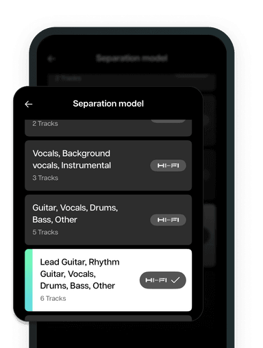
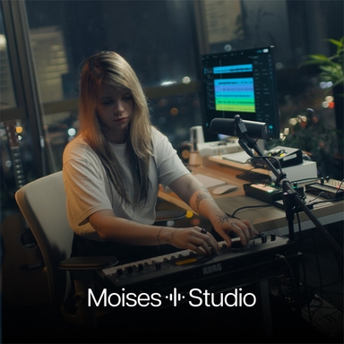

Moises 到底能干嘛？一份给音乐人的快问快答
AI 拆轨分声部工具 Moises 深度解析——拆轨残留怎么办、免费付费差在哪、Studio 协作怎么用，8 个问题说清这个音乐人工具箱。
整理一篇关于 Moises 的快问快答。
Moises 是什么？
一句话：给音乐人的 AI 工具箱，核心能力是把一首歌拆成独立声部——人声、鼓、贝斯、吉他、钢琴各归各轨，然后围绕这些声部做练习、创作和协作。它不是普通听歌 App，也不是 DAW 替代品，而是"把拆轨这件事做透，再往上堆配套工具"的思路。在Moises官网上可以直接体验分轨，也有手机 App 和 DAW 插件，从下载拿就行，入口很多，但底层是同一套分轨引擎。
谁在用 Moises？
扒歌扒到吉他音糊了的人、想自己唱伴奏带的人、写 demo 时需要参考编曲层次的人、排练时想把乐队曲目拆给每个人单独练的人。还有一类：独立制作人，把 Moises 当工作站的前置工具——拆参考曲拿声部当素材、用人声转换试旋律质感、Studio 里和异地搭档实时合编曲。反过来，如果你只是想听歌或者找伴奏，用不到它。
核心功能有哪些？
分轨是招牌，按精度和专项分好几档——想深入了解各档位适用场景可以翻文档——：标准分轨给快速扒歌用，Hi-Fi 模式精度更高适合制作环节，吉他专项模型专门对付吉他和钢琴互相串音的老问题。配套的还有和弦识别、调音器、节拍器这些练习工具，以及创作线的人声转换（把 demo 里的自己换个音色听）、Studio 网页版实时协作（异地搭档在同一个浏览器会话里编曲）、DAW 插件（在工作站里就地拆参考曲，不用导出再导入）。整条线从"拿到一首歌"到"产出新东西"都覆盖了。

拆出来的轨总有人声残留怎么办？
先接受一个前提：原始录音质量是分轨效果的上限。糊成一团的老磁带翻录、低码率网络音频，任何引擎都救不回细节。在源文件没问题的前提下，残留缓解手段按性价比排：先换 Hi-Fi 模式重跑；拆完不要把人声推子完全归零，留 -6dB 左右的微量人声——你自己唱的时候这点残留会被盖住；实在介意就换一首制作更干净的歌。吉他和钢琴互相串音是频段重叠的经典难点，专项模型会好很多，扒琴配合慢速播放逐音确认比纯听更可靠。导出时如果发现听起来糊，检查格式——MP3/M4A 本来就比无损糊，进制作环节改用 WAV 导出。
免费版和付费版差在哪？
好消息是免费与付费用的是同一套基础分轨管线——不是同一首歌拆出两种质量的阉割版，差别全在额度、时长和高级模型的访问权。免费档每月有 5 首处理额度，足够入门体验；重度使用、长音频处理、需要 Hi-Fi 和吉他专项模型的才需要付费。一个容易踩的坑：模型一直在更新，同一首歌不同时期拆的结果确实可能变化——官方态度是模型持续改进、效果以最新版为准，重要的分轨结果尽早导出存档，别对旧项目有执念。
Studio 网页版和手机 App 是什么关系？
容易混的两个东西。手机 App 是练习工具——练歌、拆轨、调推子、存曲库。Studio 网页版是协作工具——多人在同一个浏览器会话里实时编排、录音、编辑，不用装任何东西，没有版本冲突，没有文件交接，音频处理在云端跑，合作者电脑配置不重要。两条线云端互通：手机端练熟的歌和分轨预设，Studio 里直接取用；Studio 里生成的新声部，手机端同样能看到。一个异步一个实时，正好互补。

DAW 插件有什么用？
如果你天天在工作站里做编曲，插件形态能省很多体力。没有插件时的工作流是"网页拆好 → 逐轨导出 → 导入工作站"，一次两次还行，天天拆就是重复劳动。插件把分离能力直接嵌进工作站：工程里拖入参考歌，插件内完成分离，直接听到各声部编曲层次，做配器参考不用切出工程；拆出的鼓组、贝斯线直接进工程当素材；给客户做排练伴奏时，在工作站里完成"拆原曲 → 调推子 → 渲染成品"一条线。同一账号体系，曲库云端互通，白天在手机上试好的分轨方案，晚上在工作站里复现。插件内的分离同样走账号额度，免费档的 5 首限制在插件里一样生效，重度制作先确认套餐。
和同类分轨工具比怎样？
Moises 最大的差异是从"分轨工具"往"音乐人工具箱"走了很远。同行普遍停在"拆轨导出"这一步，Moises 往上堆了练习工具（和弦识别、调音器、节拍器）、创作工具（人声转换、伴奏生成）、协作工具（Studio 网页版）和专业形态（DAW 插件），整条线串起来了。分轨引擎本身不是唯一最好的，但配套工具的密度和衔接流畅度目前没看到能完全对上的。缺点也有：部分高级功能只对付费开放，免费档额度有限；模型持续更新意味着旧项目结果可能漂移，需要及时存档。
值得装吗？
如果你是音乐人、扒歌人、独立制作人，值得——尤其当你已经习惯用手机碎片时间练歌、或者经常和异地搭档协作时，它把几个本来分散的需求收进了一条流畅的链路。普通听歌用户绕道。想先上手再决定的，直接装 App 用免费档跑几首体验一下，拆出来的轨如果够用再考虑付费升级。